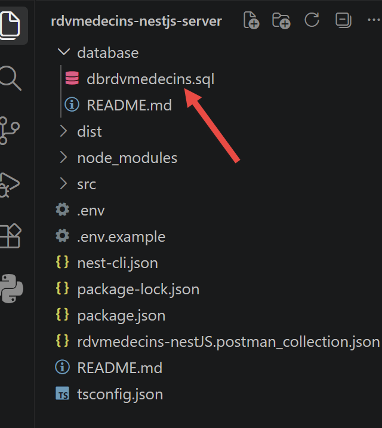
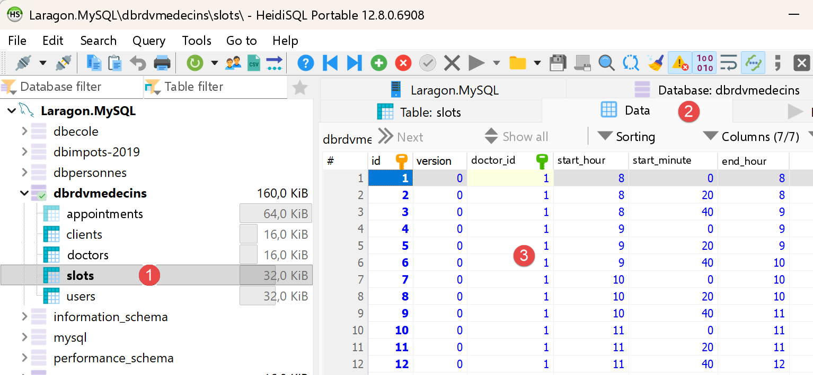
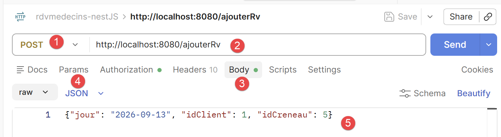

3. Hoofdstuk 2 - De server [NestJS] installeren
De in dit document beschreven client in [Kotlin] heeft een server nodig om te bevragen: de server [NestJS] voor de applicatie [RdvMedecins], die bij dit document wordt geleverd in de map [rdvmedecins-nestjs-server]. Omdat dit document zich richt op [Kotlin], wordt die server als „blackbox” behandeld: dit hoofdstuk legt uit hoe u de server installeert en configureert, de database [MySQL] ervan aanmaakt, de server start en test, maar de code ervan wordt niet besproken. Lezers die meer over [NestJS] willen weten, kunnen het document „Inleiding tot de taal TypeScript en het webframework NestJS” (2026) raadplegen.
Dit hoofdstuk is een exacte kopie van Hoofdstuk 2 uit de cursus „Een client-servervoorbeeld - Flutter / NestJS (2026)”: de server, de database en de tests zijn precies dezelfde. Lezers die deze server al voor de cursus Flutter hebben geïnstalleerd, kunnen direct doorgaan naar de laatste paragraaf van dit hoofdstuk, „De Kotlin-client voor het eerst starten”.
3.1. Laragon installeren
Om de database [MySQL] aan te maken die door de server [NestJS] wordt gebruikt, gebruiken we het hulpmiddel Laragon. In september 2026 is Laragon beschikbaar op de URL [Download Laragon – Fast & Modern Dev Environment ]. Laragon bevat hulpmiddelen waarmee u een PHP-server en de DBMS-server [MySQL] kunt installeren:

- in [1], een Apache-webserver;
- in [2], het DBMS [MySQL];
- in [3], een berichtenhulpmiddel dat we niet gebruiken;
- [4] start alle services (Apache, [MySQL], MailPit);
- [5] toont de webpagina voor de URL [http://localhost]. Deze URL verwijst standaard naar de map <laragon-install>\www, waarbij <laragon-install> de installatiemap van Laragon is;
- in [6], start het hulpmiddel HeidiSQL, waarmee u MySQL-databases beheert. We gebruiken dit hulpmiddel om de database aan te maken die door de server [RdvMedecins] wordt gebruikt;
- in [7], opent u een terminal waarin alle binaire bestanden die Laragon nodig heeft in de PATH staan;
- in [8], opent u de Windows Verkenner in de map die bij de URL [http://localhost] hoort;
De installatiemap van Laragon bevat de volgende onderdelen:
 |
- in [1] bevat de map [bin] talrijke applicaties:
 |
- in [1], de Apache-webserver;
- in [2], een terminal voor de opdrachtregel;
- [3], een client ([git]) waarmee u de verschillende versies van een project beheert;
- [4], een databasebeheerprogramma;
- [5], een mailbeheerprogramma;
- [6], het DBMS [MySQL];
- [7], een andere webserver;
- in [8], [node.js] om JavaScript-scripts uit te voeren;
- [9], een teksteditor;
- [10], de PHP-interpreter;
- [11], de [Python]-interpreter;
- [12], een cacheserver;
Laragon wordt geleverd met een complete ontwikkelomgeving. In deze cursus gebruiken we alleen het DBMS [MySQL] [6] en het hulpmiddel [heidisql] om dit grafisch te beheren;
3.2. De server [NestJS] installeren en configureren
De map [rdvmedecins-nestjs-server] heeft de volgende mapstructuur:
Elke submap van [src/] bevat een eigen [README.md]-bestand, dat samenvat waarvoor de bestanden in die map dienen. De broncode van deze bestanden wordt in dit document niet behandeld.
Typ in de map [rdvmedecins-nestjs-server] de volgende opdrachten in een terminal:
Het bestand [.env] stelt omgevingsvariabelen in:
Pas het zojuist aangemaakte bestand [.env] aan uw [MySQL]-installatie aan (gebruikersnaam, wachtwoord, poort). Omdat authenticatie is toegevoegd, bevat dit bestand ook een sleutel met de naam JWT_SECRET: de voorbeeldwaarde is geschikt om dit document te volgen, maar moet vóór enig echt gebruik worden vervangen door een willekeurige tekenreeks die uniek voor u is.
3.3. De database aanmaken
De database [dbrdvmedecins] weerspiegelt de structuur van het oorspronkelijke document (2014, Spring 4 / [MySQL] 5): dezelfde tabellen - [doctors], [clients], [slots], [appointments] - dezelfde refererende sleutels, dezelfde uniciteitsbeperking. De enige nieuwe toevoeging, ingevoerd door de stap „authenticatie” van deze port: de tabel [users]. De relaties tussen deze tabellen zijn als volgt: een arts ([doctors]) heeft meerdere tijdsloten ([slots], refererende sleutel [doctor_id]); een afspraak ([appointments]) koppelt een dag, een tijdslot (en dus een arts) en een klant ([clients]); de tabel [users] staat los van de andere vier: ze wordt uitsluitend voor authenticatie gebruikt.
3.3.1. [database/dbrdvmedecins.sql]

1 2 3 4 5 6 7 8 9 10 11 12 13 14 15 16 17 18 19 20 21 22 23 24 25 26 27 28 29 30 31 32 33 34 35 36 37 38 39 40 41 42 43 44 45 46 47 48 49 50 51 52 53 54 55 56 57 58 59 60 61 62 63 64 65 66 67 68 69 70 71 72 73 74 75 76 77 78 79 80 81 82 83 84 85 86 87 88 89 90 91 92 93 94 95 96 97 98 99 100 101 102 103 104 105 106 107 108 109 110 111 112 113 114 115 116 117 118 119 120 121 122 123 124 125 126 127 128 129 130 131 | |
Laten we deze code toelichten:
- Regels 20-21: [CREATE DATABASE IF NOT EXISTS dbrdvmedecins …] gevolgd door [USE dbrdvmedecins] - maakt de database aan als die nog niet bestaat (tekenset [utf8mb4], die alle Unicode-tekens ondersteunt, inclusief accenten) en selecteert die vervolgens: alle volgende instructies gelden daarvoor. Deze twee regels moeten absoluut als EERSTE komen: als ze na [DROP TABLE …] zouden worden uitgevoerd, zouden ze mislukken omdat er geen database is geselecteerd (fout [No database selected]);
- Regels 24-28: [DROP TABLE IF EXISTS …] - het script begint bij elke uitvoering met een lege database, in de omgekeerde volgorde van de afhankelijkheden (te beginnen met
appointments, die verwijst naarslotsenclients, tot en metusers, waarnaar niemand verwijst): [MySQL] weigert een tabel te verwijderen waarnaar nog door een refererende sleutel wordt verwezen; - Regel 58: [doctor_id INT NOT NULL], daarna regel 63: [CONSTRAINT fk_slots_doctor FOREIGN KEY …] - een tijdslot hoort altijd bij een arts;
- regel 78: [CONSTRAINT unq1_appointments UNIQUE (day, slot_id)] - de centrale bedrijfsregel van de applicatie: een tijdslot op een bepaalde dag kan maar één keer worden geboekt. Deze beperking, en alleen deze, voorkomt dubbele boekingen - noch de validator, noch de bedrijfslaag controleert dit expliciet opnieuw;
- regels 84-91: [CREATE TABLE users (…)] - de tabel die in deze stap is toegevoegd.
loginis UNIQUE (twee gebruikers kunnen niet dezelfde inlognaam hebben);passwordbevat een wachtwoord dat met bcrypt is gehasht (nooit in platte tekst); role is 'ADMIN' of 'USER' - één enkele tekstkolom, terwijl het oorspronkelijke document drie tabellen gebruikte (users, roles, users_roles) om meerdere rollen per gebruiker mogelijk te maken. Omdat deze applicatie slechts twee elkaar uitsluitende rollen nodig heeft, zou de oorspronkelijke veel-op-veel-relatie overdreven zijn geweest; - regels 129-131: [INSERT INTO users …] - twee demoaccounts, admin/admin (rol ADMIN) en user/user (rol USER), met wachtwoorden die al met bcrypt zijn gehasht (10 salt-rondes) - nooit in platte tekst, ook niet in dit demoscript.
3.3.2. Het script uitvoeren met HeidiSQL
Om de database [MySQL] aan te maken die de server [NestJS] nodig heeft, gaan we als volgt te werk:
 |
- in [1] moeten alle services zijn gestart;
- in [2] kunt u met de optie [Database] de database beheren;
De optie [Database] start een hulpprogramma met de naam HeidiSQL:
 |
- In [1] kunt u uit verschillende DBMS-opties kiezen. De standaardwaarde is het DBMS MySQL. Dat is goed;
- in [2] meldt u zich aan bij HeidiSQL;
 |  |
- Voer in [1-2] het SQL-bestand uit en selecteer vervolgens het bestand [dbrdvmedecins.sql], dat u in de map [rdvmedecins-nestjs-server/database] vindt:

Het uitvoeren van het bestand [3] maakt de database [dbrdvmedecins] aan die door de server [NestJS] wordt gebruikt. Druk in HeidiSQL op F5 om de weergave te vernieuwen en de database te zien:

De database [dbrdvmedecins] is aangemaakt. U kunt de inhoud ervan bekijken:

- In [1-3] de tabel [clients];
- [id] is de primaire sleutel van de tabel;
- [version] is het versienummer van de rij. Dit nummer wordt opgehoogd telkens wanneer de rij wordt gewijzigd;
- [title, last_name, first_name] identificeert de persoon;

- in [1-3] de tabel [doctors];
- [id] is de primaire sleutel van de tabel;
- [version] is het versienummer van de rij;
- [title, last_name, first_name] identificeert de persoon;

- In [1-3] de tabel met de tijdsloten voor afspraken van de artsen:
- [id]: primaire sleutel;
- [version]: versienummer van de rij;
- [doctor_id]: refererende sleutel die verwijst naar de primaire sleutel van de arts;
- [start_hour, start_minute]: uur en minuten van het begin van de afspraak. Zo betekent [8,20] 8:20 uur;
- [end_hour, end_minute]: uur en minuten van het einde van het consult.

- In [1-3] de tabel [appointments] met geplande afspraken;
- [id]: primaire sleutel;
- [version]: versienummer;
- [day]: datum van de afspraak;
- [slot_id]: refererende sleutel die verwijst naar de primaire sleutel van het tijdslot van de afspraak. Omdat een tijdslot aan een arts is gekoppeld, weten we welke arts deze afspraak behandelt;
- [client_id]: refererende sleutel naar het nummer (primaire sleutel) van de klant die de afspraak maakt;

- in [1-3] de tabel [users], waarin de gebruikers staan die de applicatie [NestJS] mogen gebruiken;
- [id, version]: primaire sleutel, versienummer;
- [login, password]: inloggegevens van de gebruiker;
- [name]: naam van de gebruiker;
- [role]: de rol van de gebruiker. [ADMIN] heeft volledige toegang. [USER] heeft alleen-lezentoegang. Deze gebruiker kan de agenda van een arts bekijken, maar geen afspraak plannen of annuleren;
3.4. De server [NestJS] starten
Start alle services van Laragon ([Start All]) als dat nog niet is gebeurd. Start vervolgens de NestJS-server in een VSCode-terminal voor het NestJS-project:
De console toont achtereenvolgens: het opstarten van de module [NestJS], de lijst met routes die door de controller worden aangeboden en daarna de bevestiging dat de server is gestart:
Deze consoleuitvoer bevestigt dat de server inderdaad luistert op poort 8080 - precies dezelfde poort als de Spring Boot-server in het oorspronkelijke document, die om die reden bewust is gekozen.
Deze routes vormen de JSON-API die de client [Kotlin] in Hoofdstuk 4 zal gebruiken. [POST /login] is de enige openbare route: die geeft een token (JWT) terug dat alle andere routes in de header vereisen ([Authorization: Bearer <token>]). De routes met alleen-lezentoegang ([GET …]) zijn toegankelijk voor de rollen ADMIN en USER; de twee routes die gegevens wijzigen, [POST /addAppointment] en [POST /deleteAppointment], zijn voorbehouden aan de rol ADMIN. Zakelijke antwoorden worden verpakt in een object [{ status, data }], waarin [status] op 0 staat als de bewerking is geslaagd.
3.5. De server testen met een browser
Omdat authenticatie is toegevoegd, vereisen alle routes onder [RdvMedecinsController] een geldig JWT-token; een browser alleen kan ze daarom niet meer rechtstreeks testen. Bijvoorbeeld:
geeft nu zonder token de fout 401 Unauthorized terug:

Dit is het verwachte gedrag: dit antwoord bevestigt dat de server zijn routes goed beveiligt. Postman (volgende paragraaf) is nodig om een token te verkrijgen en vervolgens te gebruiken.
3.6. De server [NestJS] testen met Postman
Het hulpmiddel Postman is beschikbaar op de URL [https://www.postman.com/downloads/]. Mogelijk moet u een account aanmaken.
Start alle services van Laragon en open vervolgens de desktopapplicatie Postman:
 |  |
- Maak in [1-2] een HTTP-verzoek aan om de server voor het beheer van afspraken van artsen te bevragen;
3.6.1. Inloggen en een token verkrijgen
- Maak in Postman een nieuw verzoek met de methode POST, URL http://localhost:8080/login;
- Selecteer op het tabblad [Body] de optie „raw”, dan het formaat JSON en voer in: {"login": "admin", "password": "admin"} (of „user/user” om de rol USER te testen);
- Verstuur het verzoek.

- in [1-2] het verzoek POST naar de server [NestJS] die op poort 8080 draait;
- in [3-5] de body van het verzoek. Dit stuurt de JSON-tekenreeks met de inloggegevens van de gebruiker die probeert in te loggen naar de server, in dit geval admin/admin;
- in [6] het antwoord van de server;
- in [7] het authenticatietoken dat volgende verzoeken naar de server moeten sturen om aan te geven: „ik ben al geauthenticeerd”;
Kopieer de waarde van accessToken: dit is het token dat nu in elk volgend verzoek moet worden meegestuurd. In het bovenstaande voorbeeld is het te kopiëren token „eyJ...zoM” (zonder de aanhalingstekens).
3.6.2. Een beveiligde route aanroepen met het token
Selecteer voor GET /getAllDoctors (of een andere route van RdvMedecinsController) in Postman op het tabblad Authorization het type Bearer Token en plak het hierboven gekopieerde token (Postman voegt dan automatisch de header Authorization: Bearer <token> toe).

- in [1-2] het verzoek dat naar de server wordt gestuurd. Hiermee wordt de lijst met artsen in de database opgevraagd;
- In [3-5] moet het verzoek het authenticatietoken meesturen. Selecteer in [4] [Bearer Token] en plak in [5] het authenticatietoken dat u eerder hebt gekopieerd;
- in [7] het antwoord van de server;
3.6.3. De routes POST (/addAppointment, /deleteAppointment) testen
Volg dezelfde werkwijze als hierboven (methode POST, body JSON, Bearer Token), precies zoals het oorspronkelijke document voor dezelfde routes de Chrome-extensie „Advanced Rest [Client]” gebruikte.
Opmerking: de volgende Postman-verzoeken vindt u in de collectie [rdvmedecins-nestJS.postman_collection.json]:

Druk in Postman op Ctrl-0 om de collectie te laden:

- Klik op [1] om de collectie te laden en selecteer het collectiebestand. Zodra de collectie is geladen, worden de verzoeken ervan weergegeven:

Om /addAppointment te testen met het token van een account ADMIN:
- Postman-verzoek, methode POST, URL http://localhost:8080/addAppointment;
- Authorization-tabblad: Bearer Token, token van admin;
- [Body]-tabblad, raw, JSON: {"day": "2026-09-13", "clientId": 1, "slotId": 5};
- Verstuur het verzoek.

- in [3-5] de body van het verzoek;

U kunt met HeidiSQL controleren of er een afspraak aan de database is toegevoegd:

Om /deleteAppointment te testen, volgt u dezelfde werkwijze met de body {"appointmentId": 2} (het ID van de afspraak die moet worden geannuleerd (8) hierboven).

- in [4] het nummer hierboven van de afspraak die moet worden verwijderd;

- in [5-7] het authenticatietoken;
- in [9] het antwoord van de server. [status=0] geeft aan dat de bewerking is geslaagd. U kunt dit controleren met HeidiSQL:

- in [3] bestaat afspraak nr. 2 niet meer;
Probeer dit: herhaal hetzelfde verzoek /addAppointment met het token van het account USER (user/user) in plaats van het token van admin: het antwoord wordt 403 Forbidden, met de melding „role [USER] does not allow this action (required role: ADMIN)” - een concrete demonstratie van het toegangsbeheer op basis van rollen dat door de server is geïmplementeerd.
3.7. De Kotlin-client voor het eerst starten
Open, terwijl de server [NestJS] draait, het project [rdvmedecins-kotlin-client] in Android Studio (zie Hoofdstuk 1) en start de emulator. In de werkbalk van Android Studio moet de keuzelijst met apparaten de emulator tonen (bijvoorbeeld [Pixel 8 API 37]); de knop [Run] (de groene driehoek) ernaast compileert de app, installeert die op de emulator en start hem.
Zonder Android Studio kunnen dezelfde stappen vanaf de opdrachtregel worden uitgevoerd: de Gradle-taak [installDebug] compileert en installeert de app en daarna start [adb] deze:
- [installDebug]: bouwt de app (zoals [assembleDebug]; zie Hoofdstuk 1) en installeert die vervolgens op het aangesloten apparaat - emulator of telefoon;
- [adb shell am start -n <application>/<activity>]: geeft de Android Activity Manager ([am], Activity Manager) de opdracht om de activity [MainActivity] van de app [fr.rdvmedecins.client] te starten - wat het systeem doet wanneer u op het pictogram van de app tikt.

Eerst verschijnt het inlogscherm, net als bij de vorige clients in deze cursus: bij de database van de server worden twee demoaccounts geleverd, [admin]/[admin] (rol [ADMIN], volledige toegang) en [user]/[user] (rol [USER], alleen-lezentoegang). Met de knoppen „FR”/„EN” rechtsboven schakelt u de interface naar het Frans of Engels, zelfs vóór het inloggen.
Het veld „Server URL” bevat standaard [http://10.0.2.2:8080]: in de emulator verwijst het speciale adres [10.0.2.2] naar de computer waarop de emulator draait, dus naar de server [NestJS]. Als de verbinding na ongeveer tien seconden mislukt (melding: „Incorrect login or password.”), komt dat meestal doordat dit adres niet reageert: dit gebeurde op de computer waarop dit document is geschreven. De oplossing wordt in Hoofdstuk 5 beschreven: de opdracht [adb reverse tcp:8080 tcp:8080], gevolgd door de URL [http://localhost:8080].